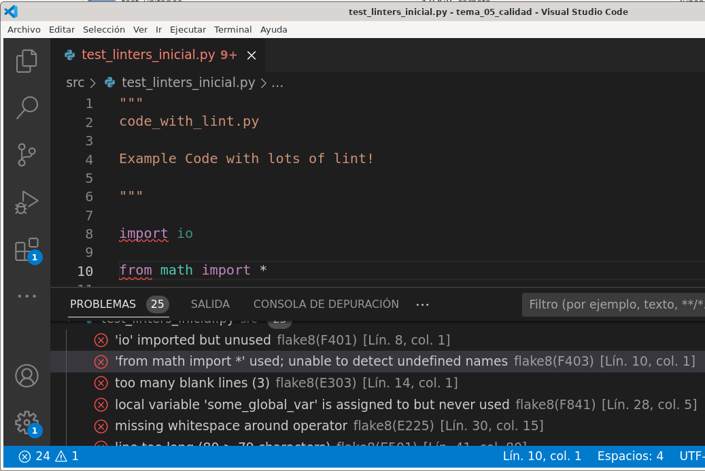
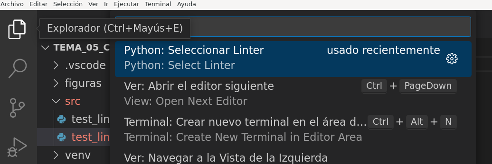
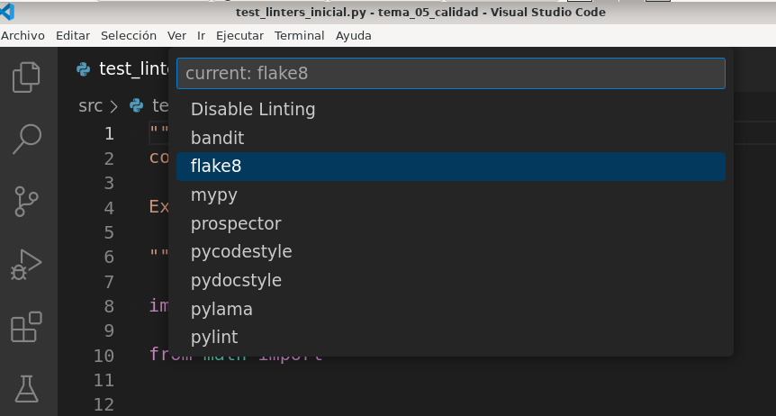

Introducción a Python - Linters
1. Intro
Hay un cierto grupo de errores que pueden ser identificados y reparados antes de que el código llegue a ser ejecutado. Estos podrían ser:
- Errores de sintaxis.
- Código poco intuitivo o difícil de mantener.
- Uso de "malas practicas".
- O uso de estilos de código inconsistentes.
Las herramientas que revisan tu código para buscar estos errores o malas prácticas se llaman linters. En el caso de Python hay varios disponibles:
- Flake8
- Pylint
- PyFlakes
- ...
Flake8 is a Python library that wraps PyFlakes, pycodestyle and Ned Batchelder's McCabe script. It is a great toolkit for checking your code base against coding style (PEP8), programming errors (like “library imported but unused” and “Undefined name”) and to check cyclomatic complexity.
A continuación:
- Se parte de un fichero con errores:
test_linters_inicial.py. - Se crea un entorno virtual e instala el linter
flake8(opcionalpylint) - Se prueba el linter desde la línea de comandos.
- Se prueba el linter desde Visual Studio Code.
- Se aprende lo básico sobre su uso y configuración
2. Instalación
- Crear y activar un entorno virtual
- Instalar
flake8
3. Ejecución en CLI
Como parámetro se le indica a flake8 el fichero a revisar:
(venv) @tos:~/calidad$ flake8 test_linters_inicial.py
test_linters_inicial.py:8:1: F401 'io' imported but unused
test_linters_inicial.py:10:1: F403 'from math import *' used; unable to detect undefined names
test_linters_inicial.py:14:1: E303 too many blank lines (3)
test_linters_inicial.py:28:5: F841 local variable 'some_global_var' is assigned to but never used
test_linters_inicial.py:30:15: E225 missing whitespace around operator
test_linters_inicial.py:41:80: E501 line too long (80 > 79 characters)
test_linters_inicial.py:51:10: E711 comparison to None should be 'if cond is not None:'
test_linters_inicial.py:55:25: E703 statement ends with a semicolon
test_linters_inicial.py:63:23: E275 missing whitespace after keyword
test_linters_inicial.py:63:24: E201 whitespace after '('
test_linters_inicial.py:66:13: E303 too many blank lines (2)
test_linters_inicial.py:72:58: E251 unexpected spaces around keyword / parameter equals
test_linters_inicial.py:74:28: E221 multiple spaces before operator
...
(venv) @tos:~/calidad$
Observe como para cada posible error se muestra
- el fichero, con línea y columna,
- el código del error
- y una breve descripción de ese código de error
Por ejemplo, en la línea 28 detecta el error F481: a la variable some_global_var se le asigna un valor pero no es usada posteriormente. No genera error en ejecución, pero es evidente que se ha olvidado usarla (o sobra esa variable).
Hay también errores de formato: líneas de más de 79 caracteres, demasiados espacios después de un operador, etc.
Los códigos de error se pueden consultar en la documentación oficial. Y en este enlace tiene ejemplos descriptivos de los mismos.
4. Usando el linter en el editor
A veces sera'más comodo utilizar el linter al mismo tiempo que editamos el código. Se muestra cómo hacerlo en VScode. Primero instale la extensión Flake8 de Microsoft (Linting support for Python files using Flake8).
Ahora al editar algún fichero python se marcan los errores de linting que proporciona flake8: * En la ventana de edición se señalan, * y también los puede consultar en la ventana de problemas:

Nota obsoleta: en vesiones anteriores de Python/Vscode era necesario seleccionar el linter a utilizar en las opciones de VScode. Para ello se accedía a Ver / Paleta de Comandos / Python: Seleccionar Linter y elegir flake8 como se ve en estas figuras. Primero accedemos a la paleta de comandos

Y una vez localizdo Python: Seleccionar linter elegimos flake8

Puede desactivar el linter accediendo de nuevo a la selección del linter y seleccionando la opción "disable linting"
5. Uso ignore, select y fichero configuración
Los códigos de error le pueden ser de utilidad al usar el linter. Por ejemplo, si solamente quiere revisar un error en particular use --select y se le indican los códigos de error a revisar:
De forma similar, si quiere ignorar algunos de ellos puede usar la opción --ignore :
Tiene por otra parte la posibilidad de crear un fichero de configuración. En ese caso las opciones tienen como orden de prioridad la línea de comandos, luego el fichero de configuración y finalmente los valores por defecto. flake8 permite almacenar la configuración en lo ficheros setup.cfg o tox.ini, o .flake8.
Como ejemplo puede crear un fichero tox.ini en la raiz del proyecto con el siguiente contenido:
Si ejecuta flake8 los errores indicados en ignore ya no se muestran:
(venv) @tos:~/calidad$ flake8 test_linters.py
test_linters.py:8:1: F401 'io' imported but unused
test_linters.py:63:24: E201 whitespace after '('
test_linters.py:72:58: E251 unexpected spaces around keyword / parameter equals
test_linters.py:76:31: E222 multiple spaces after operator
...
(venv) @tos:~/calidad$
Para tener más información sobre flake8:
- Documentación oficial
- Opciones de flake8: https://flake8.pycqa.org/en/latest/user/options.html
- Códigos de error: https://flake8.pycqa.org/en/latest/user/error-codes.html
- Descripción con ejemplos de los códigos de error: https://www.flake8rules.com/
Aviso: Por defecto, si la opción
ignoreno aparece en CLI ni en fichero de congiguración los códigos de error E123/E133, E226 y E241/E242 son ignorados.
6. Ejercicio
Utilizar la herramienta flake8 con el código de los ejemplos y ejercicios de clase. Revisar y corregir los errores que muestra.
7. Enlaces
8. Anexo: linter pylint
El objetivo es conocer los linters y su uso básico, y con uno de ellos es suficiente. Pero si lo desea puede probar pylint también.
Se instala y se invoca de forma similar a flake8
(venv) @tos:~/calidad$ pip install pylint
(venv) @tos:~/calidad$ pylint test_linters_inicial.py
************* Module test_linters_inicial
test_linters_inicial.py:55:0: W0301: Unnecessary semicolon (unnecessary-semicolon)
test_linters_inicial.py:63:0: C0325: Unnecessary parens after 'return' keyword (superfluous-parens)
test_linters_inicial.py:66:0: C0325: Unnecessary parens after 'return' keyword (superfluous-parens)
test_linters_inicial.py:86:0: C0304: Final newline missing (missing-final-newline)
test_linters_inicial.py:10:0: W0622: Redefining built-in 'pow' (redefined-builtin)
test_linters_inicial.py:10:0: W0401: Wildcard import math (wildcard-import)
....
-----------------------------------
Your code has been rated at 0.00/10
Si desea más información sobre el uso de pylint: